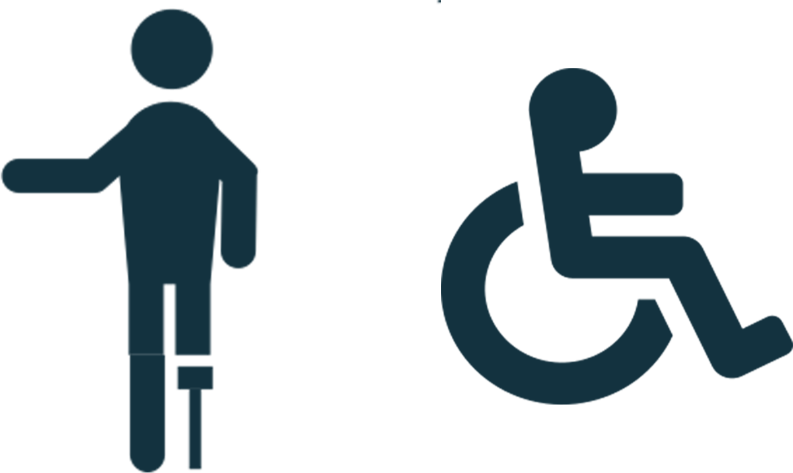

De indsamlede dåseringe bliver solgt til genanvendelse og ALLE pengene går herefter ubeskåret til det protese-specialiserede hospital i Chiang Mai, samt mobilklinikker.
Det betyder: Ingen penge til administration!
Vi har doneret
til hospitalet Prothesis Foundation
i Thailand i Chiang Mai
Case Stories
Nyheder
Projekt Dåseringe i Danmark har doneret 200.000 kr.
Repræsentanter for Inner Wheel, Sct. Georgs Gilderne og Malteser Ordnen har, på vegne af Projekt Dåseringe, overrakt 1 mio. Bath (200.000 Dkr) til Hospitalet ”Prostheses Foundation” i Chiang Mai, Thailand, ved Professor Vajara samt to doktorer den 22. januar 2016.
Dåseringene indsamles og fragtes til bl.a. Lerbjerg nær Hadsten, eller Sakskøbing, hvor de sorteres og puttes i store sække.
Projekt Dåseringe
Hvordan bliver jeg indsamler?
Step 1
Indsaml så mange dåseringe som muligt, både fra dig selv, dine venner og familie.
Step 2
Send det afsted til Skanderborg, enten med posten, Danske fragtmand, elller vores samkørselsordning.
Step 3
Vi sælger dåseringene, til højest bydende, og tager pengene med til Thailand.
Step 4

Pengene går ubeskåret til at kunne give fattige thailænder gratis proteser.
Samlet overblik over alle indsamlingsstederne
Ikke klar til at blive indsamler? Giv et bidrag istedet.
Dit bidrag: kr
Samkørselsordning
Kan du tilbyde at tage dåseringe med fra dit nærområde, og køre til Skanderborg?
Vores Historie
Projekt Dåseringe er blevet en stor succes, idet det er lykkes at skabe en stor ringvirkningseffekt. Vi har doneret ca. 425.000 kr. til hospitalet Prostheses Foundation i Thailand siden 2009. Fra 2002 til 2009 leverede vi dåseringene til hospitalet.
Kirstens rejse
I 1992 blev Kirsten Egelund Pedersen introduceret til dåseringe indsamlingen i Thailand, gennem sin mands arbejde i landet. I Thailand var der nemlig allerede opført donationer af dåseringe, der skulle hjælpe de fattige med proteser. Dette projekt var opstartet af den Thailandske prinsesse. Kirsten valgte efterfølgende at starte lignende projekt op i Danmark, med samme formål.
Proteser til Thailand
I Asien og specielt i Thailand, har fattige i stor grad problemer med miner, sukkersyge og slangebid, hvilket gør at mange bliver ben-amputeret og derved ikke kan arbejde
og/eller forsørge familien…
Hvad bliver de indsamlet penge brugt på
De penge projekt dåseringe, får indsamlet via dåseringene, går primært til hospitalet i Sangmai. Her bliver pengene brugt til at lave proteser, samt til mobile klinikker, der kører ud til bjergområderne, da disse steder er de mest vanskelige steder at komme ud til de syge, der mangler ben. På en uge laves der ca. 400 ben-proteser gennem de mobile klinikker.
Vores lager i Skanderborg
Genanvendelse af dåseringe
Dåseringe der bliver samlet, bliver genanvendt, til bl.a. opbygning af nye fly, eller biler.
Flere indsamler kom til
Primært var Kirsten den eneste der samlede ind i diskret 44, som bestod fra Aarhus N, til Skagen og Færøerne. Men efterhånden som organisationen voksede, kom der flere indsamler til, som i dag består af ca. 150 indsamler.
Samarbejdspartnere
Med flere indsamler, betød der også et større lager, og vi fik muligheden for at samarbejde med Dansk Fragtmand, hvor vi har vores hovedsamlingslager i Skanderborg.
Vores kære bestyrelse
I 2016 blev projektet for alvor, lavet om til en forening, med en bestyrelse repræsenteret af Inner Wheel. Bestyrelsen består i dag af 7 medlemmer, som alle er frivillige.
"Så længe jeg kan, vil jeg blive ved med at samle dåseringe"